Deep Learning Workshop
FifthElephant 2016
Martin Andrews @ redcatlabs.com
30 July 2016
About Today
- Four sessions
- Each about 90 minutes
- Different subject areas
- ... but interrelated
Sessions
- 9:30-11:00 : Intro & warm-up
- 11:15-12:45 : CNNs ~ images
- 1:45-3:30 : RNNs ~ language
- 3:45-5:00 : RL ~ games & wrap-up
VM installation
- VirtualBox is essential
- Copy the USB key
- ... and pass it along
Questions
- Please ask as-and-when
- ... or wait for a 'Questions' slide
- Also : Don't hide being stuck!
Session I
- A little history
- What deep-learning can do
- A little mathematics
- Hands-on in Javascript
- Hands-on in VM
- Workshop : Anomaly Detection
About Me
- Machine Intelligence / Startups / Finance
-
- Moved from NYC to Singapore in Sep-2013
- 2014 = 'fun' :
-
- Machine Learning, Deep Learning, NLP
- Robots, drones
- Since 2015 = 'serious' :: NLP + deep learning
-
- & Papers...
Deep Learning
- Neural Networks
- Multiple layers
- Fed with lots of Data
History
- 1980+ : Lots of enthusiasm for NNs
- 1995+ : Disillusionment = A.I. Winter (v2+)
- 2005+ : Stepwise improvement : Depth
- 2010+ : GPU revolution : Data
Who is involved
- Google - Hinton (Toronto)
- Facebook - LeCun (NYC)
- Baidu - Ng (Stanford)
- ... Apple (acquisitions), etc
- Universities, eg: Montreal (Bengio)
Deep Learning Now
in production in 2016
- Speech recognition
- Language translation
- Vision :
-
- Object recognition
- Automatic captioning
- Reinforcement Learning
Speech Recognition
Android feature since Jellybean (v4.3, 2012) using Cloud
Trained in ~5 days on 800 machine cluster

Embedded in phone since Android Lollipop (v5.0, 2014)
Translation
Google's Deep Models are on the phone

"Use your camera to translate text instantly in 26 languages"
Translations for typed text in 90 languages
House Numbers
Google Street-View (and ReCaptchas)

ImageNet Results

(now human competitive on ImageNet)
Captioning Images

Some good, some not-so-good
Reinforcement Learning
Google's DeepMind purchase
Learn to play games from the pixels alone

Better than humans 2 hours after switching on
Reinforcement Learning
Google DeepMind's AlphaGo
Learn to play Go from (mostly) self-play

Basic Foundation
- Same as original Neural Networks in 1980s/1990s
- Simple mathematical units ...
- ... combine to compute a complex function
Single "Neuron"

Change weights to change output function
Multi-Layer
Layers of neurons combine and
can form more complex functions

Supervised Learning
- while not done :
-
- Pick a training case (
x→target_y) - Evaluate
output_yfrom thex - Modify the weights so that
output_yis closer totarget_yfor thatx
- Pick a training case (
Gradient Descent
Follow the gradient of the error
vs the connection weights

Backpropagation
- How much 'blame' to assign to a weight?
- If it is connected to an output : Easy
- Otherwise, calculate :
-
- Blame to assign to each neuron in layer before output
- Treat each of these errors as a 'new output'
- Walk back through network
- Same complexity as forward pass
Training a Neural Network
- Time to play with :
-
- Layers of different widths
- Layers of different depths
- "Stochastic Gradient Descent" (SGD)
Workshop : SGD
-
- Go to the Javascript Painting Example
Workshop : SGD (online)
-
- Go to :
http://ConvNetJS.com/ - Look for : "Image 'painting'"
- Go to :

Simple Network

Wider Network

Two-Ply Network

Deep Network and Time

- QUESTIONS -
What's Going On Inside?
- Time to look at :
-
- Input features
- What each neuron is learning
- How the training converges
Workshop : Internals
-
- Go to the Javascript Example : TensorFlow

(or search online for TensorFlow Playground)
TensorFlow Playground

Things to Do
- Investigate :
-
- Minimal set of features
- Minimal # of layers
- Minimal widths
- Effect of going less-minimal...
- QUESTIONS -
Workshop : VirtualBox
- Import Appliance '
deep-learning ... .OVA' - Start the Virtual Machine...
Workshop : Jupyter
- On your 'host' machine
- Go to
http://localhost:8080/
Other VM Features
- There is no need to
ssh- it should Just Work - But if you want to have a poke around...
- From your 'host' machine :
ssh -p 8282 user@localhost
# password=password
- or have a look at the code on GitHub...
- PAUSE -
Frameworks
- Want to express networks at a higher level
- Map network operations onto cores
- Most common frameworks :
-
- Caffe - C++ ~ Berkeley
- Torch - lua ~ Facebook/Twitter
- Theano - Python ~ Montreal Lab
- TensorFlow - C++ ~ Google
Theano
- Optimised Numerical Computation in Python
- Computation is described in Python code :
-
- Theano operates on expression tree itself
- Optimizes the tree for operations it knows
- Makes use of
numpyandBLAS - Also writes
C/C++orCUDA(orOpenCL)
0-TheanoBasics
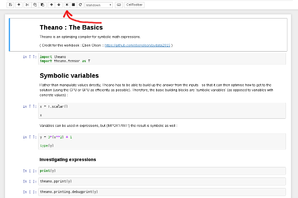Use the 'play' button to walk through the workbook
- QUESTIONS -
"Hello World" → MNIST
- Nice dataset from the late 1980s
- Training set of 50,000 28x28 images
- Now end-of-life as a useful benchmark

1-MNIST-MLP
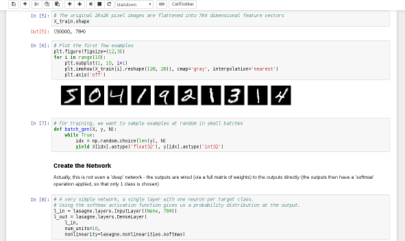We using lasagne as an additional layer on top of Theano
Network Picture
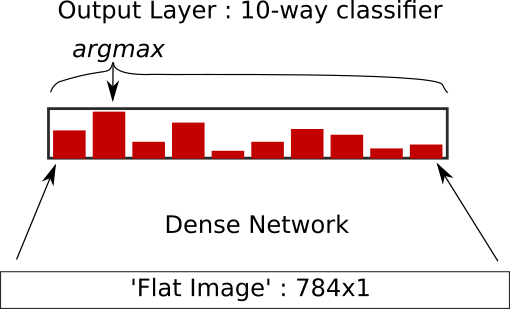... around 8-9% error rate on the test set
- QUESTIONS -
Anomaly Detection
How do we detect outliers?
- Learning what 'good' data looks like
- See whether new data looks the same
- ... if it doesn't : complain
Autoencoders
- Since we only have one 'label'
- ... train a network to reproduce its input
- Learning compressed representation
- ... is a biproduct
8-Anomaly-Detection
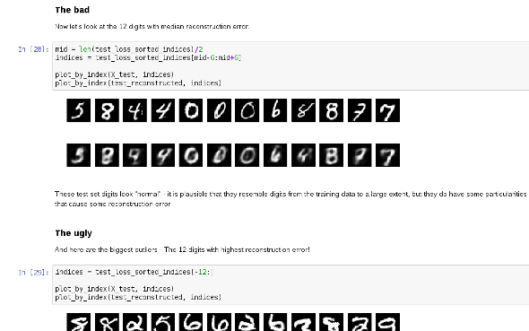Using an Autoencoder
Network Picture
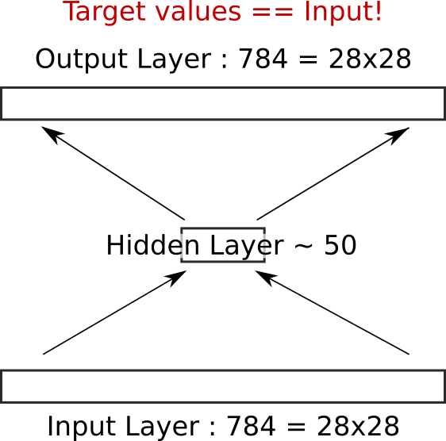- QUESTIONS -
Pre-Break Wrap-up
- This was a taster
- Heavier examples coming up
- If your VM isn't working : FIX IT NOW!

* Please add a star... *
- BREAK -
Restarting @ 11:15
Martin.Andrews @
RedCatLabs.com
My blog : http://mdda.net/
GitHub : mdda
Session II
- Convolutional Neural Networks
- MNIST example
- ImageNet models
- Workshop : Repurposing a CNN
- Workshop : Art with a CNN
Convolution Neural Networks
- Pixels in an images are 'organised' :
-
- Up/down left/right
- Translational invariance
- Can apply a 'convolutional filter'
- Use same parameters over whole image
CNN Filter

Advantages
- Features are known to be relevant
- Preserves the picture-like quality of input
- Only have to train small number of parameters
- Well suited to GPU computation
- Makes the impossible possible
Disadvantages
- Shows Deep Learning isn't pure magic
- GPU becomes more important
MNIST Example
- Use only 3 convolutional layers
- Can then visualise as {R,B,G}
- Lower error rate
2-MNIST-CNN
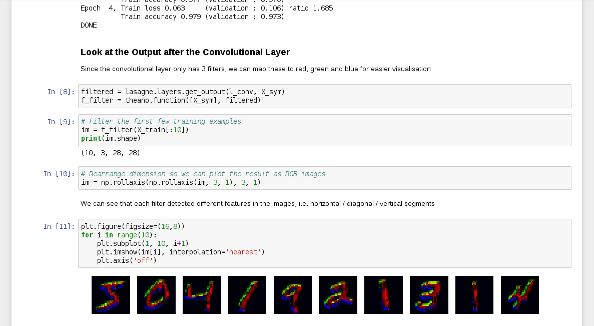Three filter layers - nice visual interpretation
Network Picture
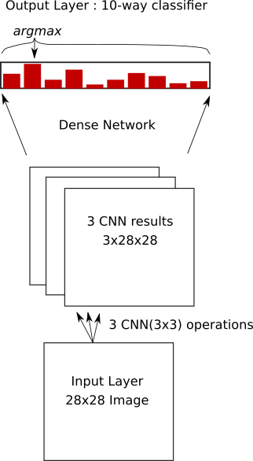After convolution layers, use dense/softmax as before
- QUESTIONS -
Image Classification
- ImageNet Competition
- over 15 million labeled high-resolution images...
- ... in over 22,000 categories

Complex Network Example

GoogLeNet (2014)
3-ImageNet-googlenet
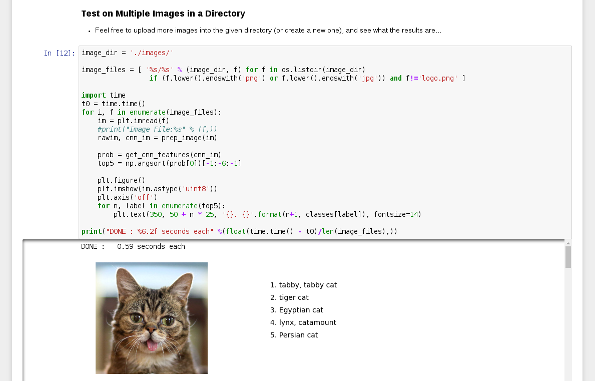Play with a ~2014 pre-trained network
Need for Speed
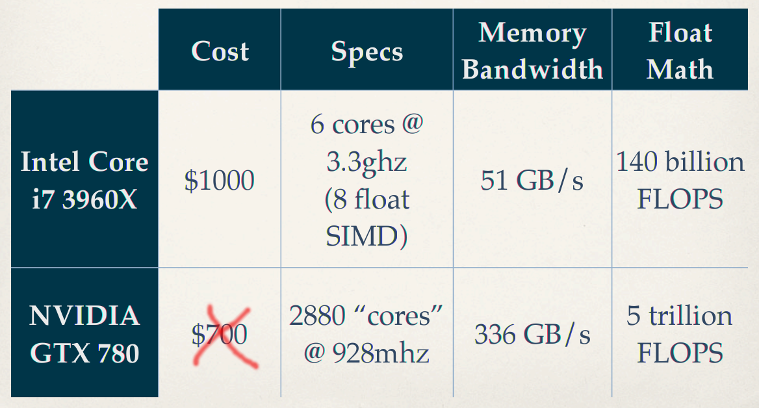... need for GPU programmers
... Even More Complex Network

Google Inception-v3 (2015)
4-ImageNet-inception-v3
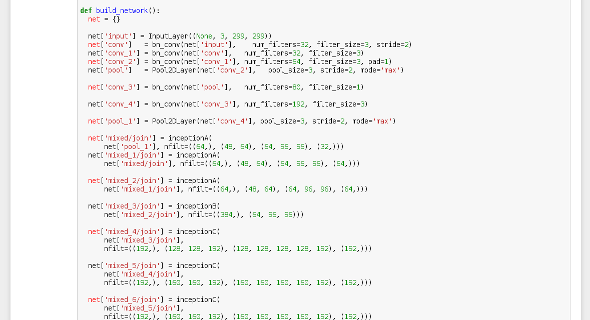Play with a ~2015 pre-trained network
- QUESTIONS -
Re-Using Pre-Built Networks
- Features learned for ImageNet are 'useful'
- Apply same network to 'featurized' new images
- Learn mapping from features to new classes
- Only have to train a single layer!
5-Commerce
Re-purpose a pretrained network
Network Picture

- QUESTIONS -
Abusing Pre-Built Networks
- Visual features can also be used generatively
- Alter images to maximise network response
- ...
- Art?
"Deep Dreams"
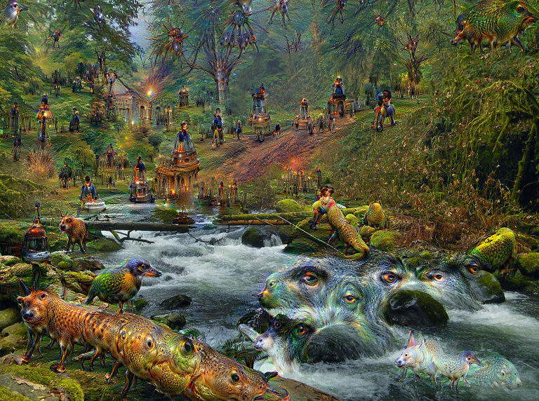Careful! : Some images cannot be un-seen...
6-Visual-Art
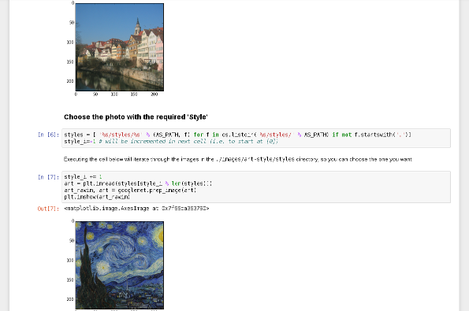Style-Transfer an artist onto your photos
Network Picture
- QUESTIONS -
- LUNCH -
Restarting @ 1:45
Martin.Andrews @
RedCatLabs.com
My blog : http://mdda.net/
GitHub : mdda
Session III
- Recurrent Neural Networks
- Natural Language Processing
- Word Embeddings
- Workshop : UPPER-CASE NER
- ?Workshop : RNN discrimination
Networks on Sequences
Variable-length input doesn't "fit"
- Apply a network iteratively over input
- Internal state carried forward step-wise
- Everything is still differentiable
Recurrent Neural Networks
- Process each timestep
- ... with the same network
- But 'pass along' internal state
Basic RNN

RNN chain
Chaining State
- Each node 'knows' history
- ... all weights are 'tied'
- Network depth is time-wise
Basic RNN

Simplest RNN ~ gradient problem
GRU Units

A GRU
LSTM Units

A Long Short-Term Memory (LSTM) Unit
Deeper too
- Can also pile up layers
- ... and run forwards and backwards
Natural Language Processing
- Work with text input
- Applications in
-
- Text Analysis
- Translation
- Knowledge Extraction
Handling Words
- English ~100k words
- A 'one-hot' input seems wasteful
- Learn about word inter-relationships from corpus?
Word Embeddings
- Major advances : word2vec & GloVe
- Basic idea : assign each word a vector (~300d)
- If words in corpus 'close', vectors should be closer
- ... gradient descent until finished
Embedding Visualisation

Highlighting Analogies
RNNs for NLP
Sentences are Variable-length
- Apply a network iteratively over input
- Internal state carried forward step-wise
- Everything is still differentiable
Learning Named Entity Recognition
- Can we train an RNN to do 'NER'?
- Human annotated Corpora are difficult to distribute :
-
- Use NLTK to annotate Wikipedia
- Train RNN on machine annotations
- Look at performance vs NLTK
- Twist : Restrict RNN input to single case text
9-RNN-Tagger

Learning to do ~NER
Network Picture

Bidirectional RNN
- QUESTIONS -
Chaining Outputs
- Each node outputs vector
- Can softmax-choose 'answer'
- Feed that 'answer' in as next input
Chaining Outputs

Self-feed to generate
Learning Character Sequences
... work-in-progress ...
8-Natural-Language

Still a work-in-progress (training takes too long)
Poetry : Epoch 1
JDa&g#sdWI&MKW^gE)I}<UNK>f;6g)^5*|dXdBw6m\2&XcXVy\ph8G<gAM&>e4+mv5}OX8G*Yw9&n3XW{h@&T\Fk%BPMMI
OV&*C_] ._f$v4I~$@Z^&[2
mOVe`4W)"L-KClkO]wu]\$LCNadyo$h;>$jV7X$XK#4,T(y"sa6W0LWf\'_{\#XD]p%ck[;O`!Px\#E>/Or(.YZ|a]2}q|@a9.g3nV,U^qM $+:nlk0sd;V-Z&;7Y@Z "l-7P^C
"xBF~~{n} n\ Pcbc9f?=y)FIc1h5kvjIi
C<UNK>s DWJr_$ZQtu"BTYm'|SMj-]Z<Vqj*.lh%IYW|q.GK:eNI"r>833?+RuUsOj_)a{\T}gH.zZR^(daC3mg5P0iFi]bqGo4?T|\>0_H&g889voTh=~)^DDRYND46z1J]x;<U>>%eNIRckL)N8n<UNK>n3i)+Ln8
?)9.#s7X]}$*sxZ"3tf ")
@'HW.;I5)C.*%}<jcNLN+Z__RWoryOb#
/`r
Poetry : Epoch 100
Som the riscele his nreing the timest stordor hep pIs dach suedests her, so for farmauteds?
By arnouy ig wore
Thou hoasul dove he five grom ays he bare as bleen,
The seend,
And, an neeer,
Whis with the rauk with, for be collenss ore his son froven faredure:
Then andy bround'd the CowE nom shmlls everom thoy men ellone per in the lave ofpen the way ghiind, thour eyes in is ple gull heart sind, I I wild,
Frreasuce anspeve, wrom fant beiver, not the afan
And in thou' histwish a it wheme-tis lating ble the liveculd;
Noorroint he fhallought, othelts.
Poetry : Epoch 1000
AWhis grook my glass' to his sweet,
Bub my fears liken?
And of live every in seedher;
A Lood stall,
But tare tought than thencer sud earth,
Use'st bee sechion,
For all exprit' are a daud in heaven doth her infook perust the fork the tent.
For maud,
The pittent gover
This and rimp,
Who new
Thoir oldes and did hards, cound.
Plays : Epoch 338
Larger network...
DEDENIUS Why shoulmeying to to wife,
And thou say: and wall you teading for
that struke you down as sweet one.
With be more bornow, bly unjout on the account:
I duked you did four conlian unfortuned drausing-
to sicgia stranss, or not sleepplins his arms
Gentlemen? as write lord; gave sold.
AENEMUUNS Met that will knop unhian, where ever have
of the keep his jangst?icks he I love hide,
Jach heard which offen, sir!'
[Exit PATIIUS, MARGARUS arr [Enter CLOTHUR]
RNN Discrimination
- Can we train an RNN to detect words vs junk?
- Corpus : 100k word dictionary
- Twist : Perhaps we can generate words too...
9-RNN-Fun

RNN Discriminator & more
Discriminator Network
Generator Network
- QUESTIONS -
- BREAK -
Restarting @ 3:45
Martin.Andrews @
RedCatLabs.com
My blog : http://mdda.net/
GitHub : mdda
Session IV
- Game Play
- Reinforcement Learning
- Workshop : Bubble Breaker
- More RL ideas
- Wrap-up
Reinforcement Learning
- Learning to choose actions ...
- ... which cause environment to change
Google DeepMind's AlphaGo
Useful beyond games...
- ... advertising
- ...
- ...
- ... and data center cooling
Agent Learning Set-Up
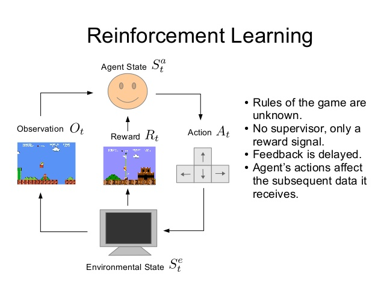Q-Learning 1
- Estimate value of entire future from current state
- ... to estimate value of next state, for all possible actions
- Determine the 'best action' from estimates
Q-Learning 2
- ... do the best action
- Observe rewards, and new state
- * Update Q(now) to be closer to R+Q(next) *
Q-Learning Diagram
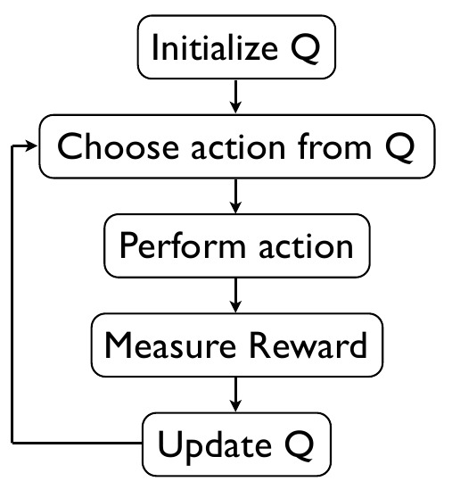Q is a measure of what we think about the future
Deep Q-Learning
- Set Q() to be the output of a deep neural network
- ... where the input is the state
- Train network input/ouput pairs from observed steps
- ... over *many* games
Today's Strategy Game
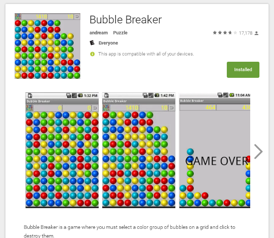Classic game : No superfluous features
Bubble Breaker : You
- How-to-play
- 5 mins test...
7-Reinforcement-Learning
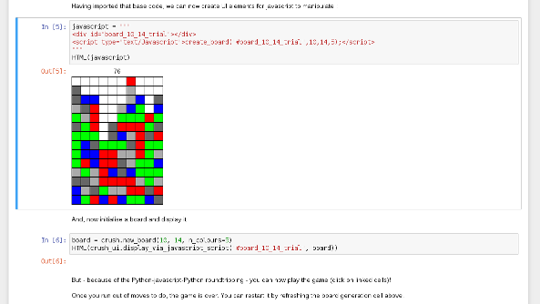Deep Reinforcement Learning for Bubble Breaker
Bubble Breaker Lessons
- Planning
- Strategies
- Failure modes
Bubble Breaker (RL)
- Turning the Board into Features
- Choosing which move to make
- Choosing a reward function
- Batch Learning
Board → Features
- Using colours of blobs as features is possible
- ... but wasteful, due to symmetry
- Encode position as several feature layers:
-
- Board silhouette
- colour[i,j] == colour[i+a,j]
- colour[i,j] == colour[i,j+b]
Choice of Move
- Game code can 'run' an action against the board
- Evaluate each separate resulting board
- Choose from ranked list :
-
- Exploit : Choose best move
- Explore : Choose random move
Reward Function
- Pros/cons of using 'change in score'
Batch Learning
- Normally, networks train on same data repeatedly
- But past actions become irrelevant training
- Retain some memory of previous actions
- But 'roll forward' with newer examples continuously
7-Reinforcement-Learning
Deep Reinforcement Learning for Bubble Breaker
Network Picture
AlphaGo Extras
- Monte-Carlo Tree Search
- Policy Network to hone search space
- Self-play
- ... and running on 1202 CPUs and 176 GPUs
- QUESTIONS -
No time for...
- Dropout
- Batch Normalization
- Residual Networks
- Antagonistic Learning
- Sequence-to-Sequence
Dropout
- Training : randomly set neuron outputs to zero (50/50)
- Testing : no zeroing, but halve the weights
- Improves learning and generalisation
- Mechanism : Ensembling?
Batch Normalization
Residual Networks
- Train a shallow-ish network 'fully'
- The add extra 'side' layers to each layer :
-
- Fix up 'residuals' that single layer cannot
- Expand the depth of the network
- Microsoft ResNet (ImageNet 2016) = 152 layers
Antagonistic Learning
- Discriminator network vs reality
- Generator network vs reality
- Generator vs Discriminator :: FIGHT!
Sequence-to-Sequence
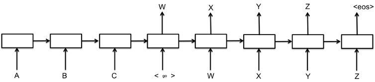Encoder Network feeds hidden state to Decoder Network
Attention Network
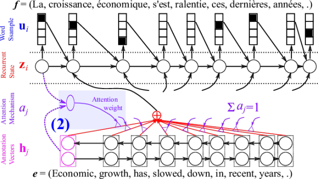Differentiable → Training : Even crazy stuff works!
Image Labelling
We have the components now

Image Labels
"A.I. Effect"
Conclusion
- Deep Learning may deserve some hype...
- It's not actually magic
- But it is experimental
* Please add a star... *
Feedback
http://hsgk.in/AdvancedDeepLearning
Martin.Andrews @
RedCatLabs.com
My blog : http://mdda.net/
GitHub : mdda